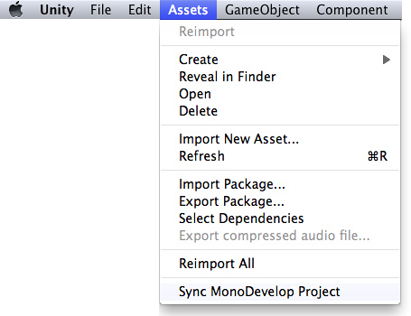
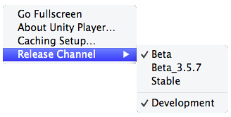
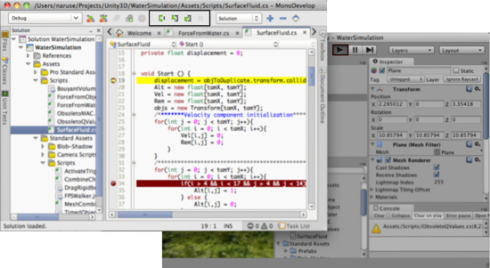
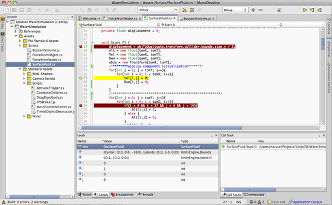

Debugger
The Unity Debugger lets you inspect your code at runtime. For example, it can help you determine when a function is called and with which values. Furthermore, it allows you to look at the value of scripts' variables at a given time while running your game. You can locate bugs or logic problems in your scripts by executing them step by step.
Unity uses the MonoDevelop IDE to debug the scripts in your game. You can debug all the languages supported by the engine (JavaScript, C#, and Boo).
Note that the debugger has to load all your code and all symbols, so bear in mind that this can have a small impact on the performance of your game during execution. Typically, this overhead is not large enough to affect the game framerate.

MonoDevelop window debugging a script in unity.
Debugging in Unity.
On Windows, users must choose to install MonoDevelop as part of the Unity installation (selected by default).
- If you haven't used MonoDevelop with your project before, synchronize your MonoDevelop project. This will open your project inside MonoDevelop.

- Set the necessary breakpoints on your scripts by clicking the lines that you want to analyze.

- Launch Unity or your player.
- Unity: Ensure you have "Editor Attaching" checked in the Preferences window.
- Players: Ensure that you have built your player with the "Development build" and "Allow script debugging" options enabled. For webplayers, additionally check that the development release channel setting is enabled on the player's context menu (right click on Windows or cmd-click on Mac OSX)

Enabling debugging in the webplayer
Enabling debugging in the webplayer
- Open your project in MonoDevelop.
- In MonoDevelop, click the Attach button in the toolbar, or choose Attach from the Run menu.
- From the dialog that appears, choose the item you wish to debug.
- Notes:
- Currently supported debugging targets: Unity editors, desktop standalone players, Android and iOS players
- If your player is set not to run in the background (the default), you may need to focus your player for a few seconds in order for it to appear in the list.
- Android and iOS players need to have networking enabled when script debugging is enabled. All players need to be on the same network subnet as the computer running MonoDevelop.

- When you enter play mode, your script code will execute in the debugger.
- When a breakpoint occurs, script execution will stop, and you will be able to use MonoDevelop to step over, into, and out of your script methods, inspect your variables, examine the call stack, etc.
- Note: When you're done debugging a toplevel method (e.g.
Update()), or you just want to jump to the next breakpoint, you will experience better debugger performance by using the Continue command instead of stepping out or over the end of your function.
- Note: When you're done debugging a toplevel method (e.g.


- When you're done debugging, click the Detach or Stop buttons in the toolbar, or choose Detach or Stop from the Run menu.
Hints.
- If you add a watch to the this object, you can inspect the internal values (position, scale, rotation...) of the GameObject to which the script is attached.
Page last updated: 2012-10-30